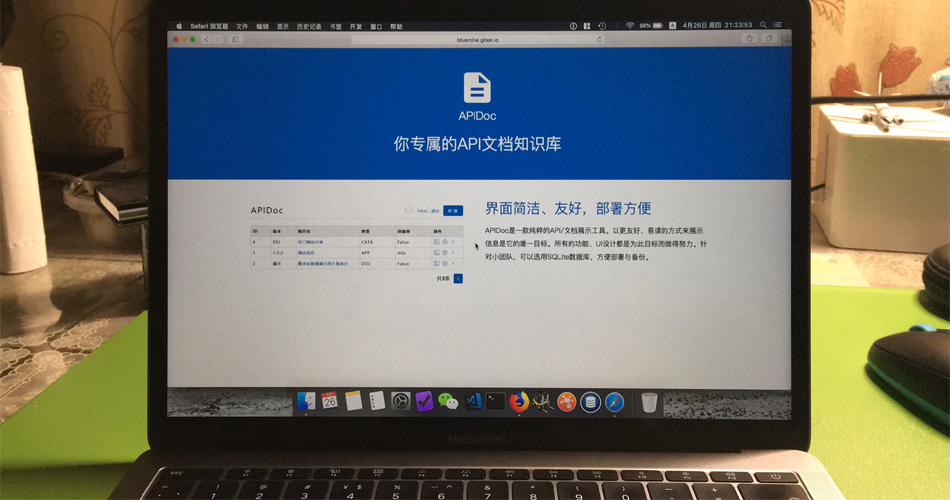

 在构思这个博客的时候我参考了很多以文字展示为主的网站，发现一些（个人认为）界面简洁清爽，能专注阅读的网站在布局和配色上都极为相似。它们大多是这样的：
- 浅底色（如白，灰）；
- 正文在屏幕正中间，左右两边都空着；
- 页面最上方有个header，或固定或滚动，上面最多写个网站名或者logo，有些会放上菜单；
- 正文左侧或者右侧会有个bar，放些标签、Top ten之类的链接，当然有的也会放广告；
- 下面有个简单的footer。
如您所见，我的的页面也设计成了这样。浅色的背景有助于突出主题——文字，两边空白的页面可以让你把精力完全集中到页面中间，也就是正文上，所以仍然有突出文字的做用。我之所以也这么做还有另外一个原因，是为了使页面在iPad等移动设备上保持和PC上基本一致的浏览体验。iPad10.5这么大的尺寸还是比较适合阅读的，但是如果屏幕再小些就不适合了。所以这也是我不想为我的页面做手机端适配的原因。为什么呢，手机屏幕太小且背光刺眼，不适合长时间盯着阅读。或许是因为我自己眼睛重度近视的原因吧。有多重呢？摘下眼镜后视力表中最大的E字完全看不清，所以对屏幕特别在意。
header和footer是页面中不能没有，但是也没啥大用的两块区域。虽然header上会有菜单以供用户选择，但是毕竟谁也不会频繁浏览菜单，主要还是看页面正文。footer上的信息更是极少用到。所以有很多网站会把这两块儿区域自动隐藏，或者将它设计的靠近底色。总之不会让它特别显眼，把用户的注意力引导到页面正中的正文上。我基本也是这种做法，只不过footer置底了，不需要看。header上有菜单，所以我让它一直浮动在页面最上方，但是因为它和整个页面底色很相近，所以并不抢眼，很容易就可以忽视它的存在。
右侧的Top ten或者友链的区域，至少在我现阶段来说属于最次要的，可有可无。所以现在只有在主页中能看到它们，任何一篇文章阅读页面都不会出现。保证用户能把精力都集中在正文中。
目前的页面布局和配色，是经过长时间“进化”总结出的，更多浏览者可以基本接受的设计。简洁、主题突出，符合现在万物皆“轻量化”的特点。期待随着时间推移，在更“挑剔”的用户的帮助下，这种布局会受到更多用户的认可。